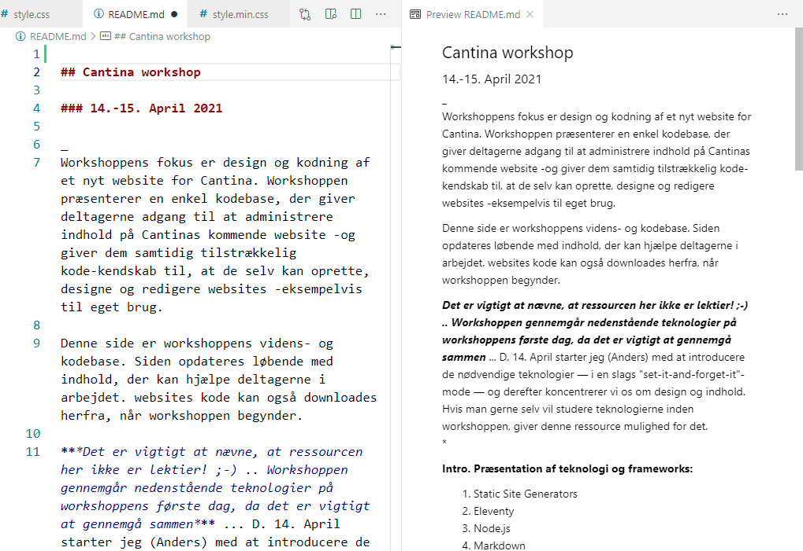

What I'll be trying today:
1) Give everyone a sense of SSGs
2) Explain why it's interesting to manage our own sites
3) Set up a personal SSG site/app for all participants
List the downloads here! ...
Eleventy
Node.js
Markdown
Visual Studio Code
git + Gitlab Pages (devOps)
Websites can be separated in two categories:
Static and dynamic.
A static website is designed, stored as files on a server and delivered to the user's web browser as is.


Eleventy (11ty) is a Node.js based static site generator

Node.js is a server-side platform built on Google Chrome's JavaScript Engine (V8 Engine).
We'll use this to run 11ty and compile our code.

Markdown is a lightweight markup language used to add formatting to plain text documents.

Visual Studio Code is a freeware code editor made by Microsoft for Windows, Linux and macOS.
We'll use git for software versioning, and Gitlab as host for our website. We'll take advantage of Gitlab's Continous Deployment functionality to build our site, as we update it.
Eleventy
Node.js
Markdown
Visual Studio Code
git + Gitlab Pages (devOps)
Git bash: Git for windows
(Just for Windows. Most macs have this)
Node.js: Node.js
Visual Studio Code: Visual studio code
Once everything is installed: Open a terminal and type
node -v(Later we'll clone this code: Code base)
ls
cd
code .
git clone
https://github.com/DobbeltDagger/Cantina_workshop.git
cd Cantina_workshop
ls
npm install
npm start
(Later: npm run deploy)

(Start the server, if it is not already running:
npm start)Anders introduces the simple logic around collections
Let's describe most of our content as collections...
Hvad er Cantinas indhold?
og hvilke typer kan det inddeles i?
Discuss ...
Hvilke punkter har menuen?
Fortæller indholdstyperne os hvad menuen indeholder?
Cantina har den særlige gul-grønne farve og den specielle font
Er der andre design-egenskaber, der skal fremhæves/indkorporeres?
Lad os gennemgå de forslag deltagerne har listet ...
Coding Train (Dan Shiffman): Coding Train